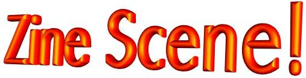
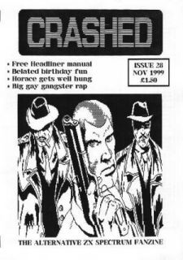

|  |
|  |
If you were going to write a magazine, what would you use? You could take the Future Publishing approach; an extensive set of nice shiny Macs and a range of over-priced software including Photoshop and Freehand. You could take the YS3 approach; an extensive set of aging PCs and a range of pirated software including Photoshop and Freehand (oh what a giveaway). Or you could take the Crashed approach, and use a Spectrum. Crikey.
Coming ever closer to the pretty-big four-oh, Crashed totes itself to be “The Alternative ZX Spectrum Fanzine”. A couple of features, a couple of reviews, a little bit of non-game related news and a mini-tutorial of some sort make up most of the fanzine, along with a quick look at a year in the history of the Spectrum and a few letters; a packed package by anyone’s standards. There’s no index, but the fanzine isn’t very big and the articles are all labelled clearly enough to prevent even Jon getting confused (something Sesame Street could never do). The paper is of pleasing quality (probably hand-made from the ancient penguin paper factories of northern Alaska), and the black-and-white layout (although perfunctory) is usually legible; surprising indeed given the equipment used. And, as might be expected from a fanzine that has been around for so long, Crashed has developed its own distinctive style and method for doing things. The convention reports are great (the April 2000 issue included an extensive article by Matthew Westcott (of Demotopia and Raww Arse fame) on the Forever demo party in Slovakia) and the news always has something to say. The features on the years in the Speccy’s history are packed with interesting facts (and curiously reminiscent of Future’s Arcade’s monthly feature), and the tutorials are a nice addition. The reviews say a fair bit about the games, but sentences often feel unfinished, something that plagues quite a bit of the magazine. It also more than lives up to its “alternative” plug, offering bags each issue in favour of the Playstation and of doing naughty things to young women. Indeed, so “alternative” is Crashed that a possibly more fitting sub-title would be “The Playstation and Totty magazine that sometimes mentions the Spectrum”. A disappointing amount of each issue is given over to material that has nothing to do with the Speccy, or even the Speccy community, and little more than a passing acquaintance with style and good taste. When it tries, Crashed can be an informative and entertaining read; if nothing else, it is lively and has a life outside of its pages. More often than not, however, it is quite happy to swear for want of explaining, treat people like idiots, insult almost everyone and fantasise graphically about women rather than take the trouble to say something useful. Which is a shame. With more thought, cold showers - and stuff about the ZX Spectrum of the title - it has the potential to be a real contender. Of course, if you want to get hold of a copy of Crashed in the post now, you're a smidge too late. Mr Fountain has recently decided that in order to expand his readership, Crashed is going online - check out the website for details. |
|
Last Page - Next Page
Contents |